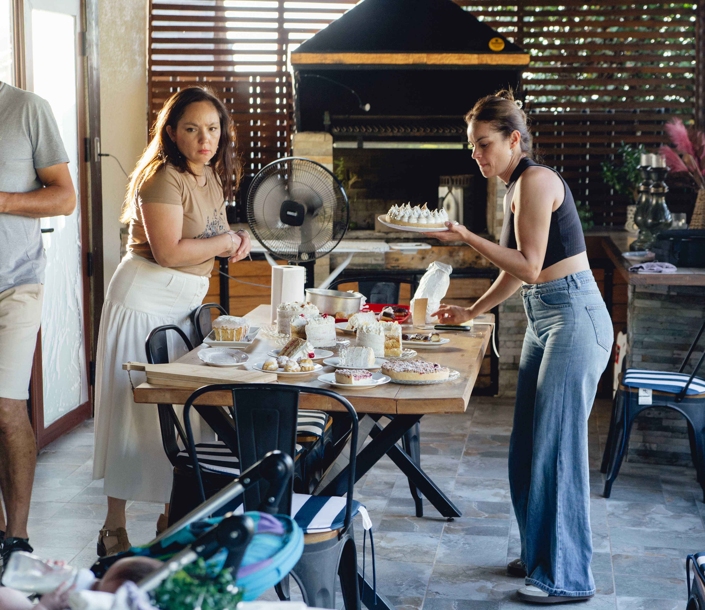

¿Listo para algo especial?
Visita nuestro catálogo y haz tu pedido con 24 horas de anticipación para garantizar la frescura artesanal de Nash.
Ir a la tienda online
Insumos de primera y procesos artesanales que crean momentos inolvidables.
Explorar Catálogo 2026Seleccionamos la mejor materia prima para asegurar un sabor auténtico en cada bocado.
Nada de producción industrial. Respetamos los tiempos de batido y horneado tradicional.
La estética de Nash es inconfundible, cuidamos cada detalle para que sea un regalo a la vista.
Visita nuestro catálogo y haz tu pedido con 24 horas de anticipación para garantizar la frescura artesanal de Nash.
Ir a la tienda online